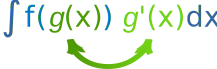
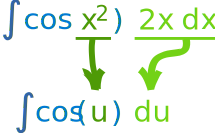
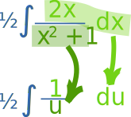
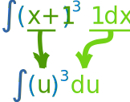
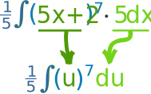

Integration by Substitution
"Integration by Substitution" (also called "u-Substitution" or "The Reverse Chain Rule") is a method to find an integral, but only when it can be set up in a special way.
The first and most vital step is to be able to write our integral in this form:

Note that we have g(x) and its derivative g'(x)
Like in this example:
Here f=cos, and we have g=x2 and its derivative 2x
This integral is good to go!
When our integral is set up like that, we can do this substitution:

Then we can integrate f(u), and finish by putting g(x) back as u.
Like this:
Example: ∫cos(x2) 2x dx
We know (from above) that it is in the right form to do the substitution:

Now integrate:
∫cos(u) du = sin(u) + C
And finally put u=x2 back again:
sin(x2) + C
So ∫cos(x2) 2x dx = sin(x2) + C
That worked out really nicely! (Well, I knew it would.)
But this method only works on some integrals of course, and it may need rearranging:
Example: ∫cos(x2) 6x dx
Oh no! It is 6x, not 2x like before. Our perfect setup is gone.
Never fear! Just rearrange the integral like this:
∫cos(x2) 6x dx = 3∫cos(x2) 2x dx
(We can pull constant multipliers outside the integration, see Rules of Integration.)
Then go ahead as before:
3∫cos(u) du = 3 sin(u) + C
Now put u=x2 back again:
3 sin(x2) + C
Done!
Now let's try a slightly harder example:
Example: ∫x/(x2+1) dx
Let me see ... the derivative of x2+1 is 2x ... so how about we rearrange it like this:
∫x/(x2+1) dx = ½∫2x/(x2+1) dx
Then we have:

Then integrate:
½∫1/u du = ½ ln|u| + C
Now put u=x2+1 back again:
½ ln(x2+1) + C
And how about this one:
Example: ∫(x+1)3 dx
Let me see ... the derivative of x+1 is ... well it is simply 1.
So we can have this:
∫(x+1)3 dx = ∫(x+1)3 · 1 dx
Then we have:

Then integrate:
∫u3 du = u44 + C
Now put u=x+1 back again:
(x+1)44 + C
We can take that idea further like this:
Example: ∫(5x+2)7 dx
If it was in THIS form we could do it:
∫(5x+2)7 5 dx
So let's make it so by doing this:
15 ∫(5x+2)7 5 dx
The 15 and 5 cancel out so all is fine.
And now we can have u=5x+2

And then integrate:
15 ∫u7 du = 15 u88 + C
Now put u=5x+2 back again, and simplify:
(5x+2)840 + C
In Summary